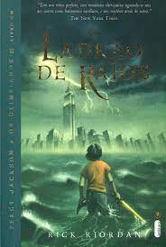

Parece impossível, mas, no bairro mais Muggle do mundo Muggle, Harry é emboscado por Dementors! Para salvar a sua vida e a do primo Dudley, Harry não tem outra hipótese senão usar magia - mesmo sabendo que isso significará a sua expulsão mais que certa de Hogwarts. Enquanto o Ministério da Magia continua a não acreditar que o terrível Senhor das Trevas está de volta, Voldemort e os seus fiéis Devoradores da Morte já começaram a preparar o seu regresso ao poder. Porém, há uma nova esperança: uma antiga ordem secreta, da qual os pais de Harry fizeram parte, voltou a organizar-se e Dumbledore está atento.
Fonte: Google books
Data
Autor
Idioma Original
Gêneros
Número de Páginas
Editora
21 de junho de 2003
J.K. Rowling
Inglês
Romance, Ficção juvenil, Literatura fantástica
750 páginas
Pottermore Publishing
O Senhor dos Anéis: A Sociedade do Anel
Sinopse
A Sociedade do Anel O volume inicial de O Senhor dos Anéis, lançado originalmente em julho de 1954, foi o primeiro grande épico de fantasia moderno, conquistando milhões de leitores e se tornando o padrão de referência para todas as outras obras do gênero até hoje. A imaginação prodigiosa de J.R.R. Tolkien e seu conhecimento profundo das antigas mitologias da Europa permitiram que ele criasse um universo tão complexo e convincente quanto o mundo real. A Sociedade do Anel começa no Condado, a região rural do oeste da Terra-média onde vivem os diminutos e pacatos hobbits. Bilbo Bolseiro, um dos raros aventureiros desse povo, cujas peripécias foram contadas em O Hobbit, resolve ir embora do Condado e deixa sua considerável herança nas mãos de seu jovem parente Frodo. O mais importante lega...
Fonte: Google books
Data
Autor
Idioma Original
Gêneros
Número de Páginas
Editora
29 de julho de 1954
J.R.R. Tolkien
Inglês
Romance, Ficção juvenil, Literatura fantástica
576 páginas
HarperCollins Brasil/
Percy Jackson: O Ladrão de Raios

Sinopse
Primeiro volume da saga Percy Jackson e os olimpianos, O ladrão de raios esteve entre os primeiros lugares na lista das séries mais vendidas do The New York Times. O autor conjuga lendas da mitologia grega com aventuras no século XXI. Nelas, os deuses do Olimpo continuam vivos, ainda se apaixonam por mortais e geram filhos metade deuses, metade humanos, como os heróis da Grécia antiga. Marcados pelo destino, eles dificilmente passam da adolescência. Poucos conseguem descobrir sua identidade. O garoto-problema Percy Jackson é um deles. Tem experiências estranhas em que deuses e monstros mitológicos parecem saltar das páginas dos livros direto para a sua vida. Pior que isso: algumas dessas criaturas estão bastante irritadas. Um artefato precioso foi roubado do Monte Olimpo e Percy é o pri...
Fonte: Google books
Data
Autor
Idioma Original
Gêneros
Número de Páginas
Editora
28 de junho de 2005
Rick Riordan
Inglês
Romance, Ficção juvenil, Literatura fantástica
387 páginas
Editora Intrínseca
Alice no país das maravilhas
Sinopse
'Você poderia me dizer, por favor, qual caminho eu devo seguir a partir daqui?'
Que esta pergunta seja feita por uma garotinha perdida de casa (após ter seguido um coelho falante até sua toca) a uma espécie de gato fantasmagórico flutuante já não causa nenhuma estranheza quando chegamos na tal parte da história, pois como nos alertou a própria menina: 'há tanta coisa estranha acontecendo aqui que eu já não me surpreendo com mais nada.
Com este conto surreal e fantástico, muitas vezes sem sentido algum, noutras vezes carregado de sentido oculto e profundo, Lewis Carroll revolucionou para sempre a literatura infantil, praticamente a refundando (não surpreende que encontremos algo do seu estilo em Antoine de Saint-Exupéry e Monteiro Lobato). É aqui que conheceremos célebres personagens como o Coelho Branco, o Chapeleiro Louco e o Gato de Cheshire. É aqui que veremos, quem sabe, a primeira descrição genuína dos sonhos infantis. É aqui que celebraremos toda a magia da boa literatura - esta que não morre nunca.
Fonte: Google Books
Data
Autor
Idioma Original
Gênero
Número de Página
Editora
novembro de 1865
Lewis Caroll
Inglês
Literatura infantil, Literatura fantástica, Ficção Absurdista, Fantástico
112 Páginas
FTD Educação
O guia do mochileiro das galáxias
Sinopse
Considerado um dos maiores clássicos da literatura de ficção científica, O Guia do Mochileiro das Galáxias vem encantando gerações de leitores ao redor do mundo com seu humor afiado.
Este é o primeiro título da famosa série escrita por Douglas Adams, que conta as aventuras espaciais do inglês Arthur Dent e de seu amigo Ford Prefect.
A dupla escapa da destruição da Terra pegando carona numa nave alienígena, graças aos conhecimentos de Prefect, um E.T. que vivia disfarçado de ator desempregado enquanto fazia pesquisa de campo para a nova edição do Guia do Mochileiro das Galáxias, o melhor guia de viagens interplanetário.
Mestre da sátira, Douglas Adams cria personagens inesquecíveis e situações mirabolantes para debochar da burocracia, dos políticos, da "alta cultura" e de diversas instituições atuais. Seu livro, que trata em última instância da busca do sentido da vida, não só diverte como também faz pensar.